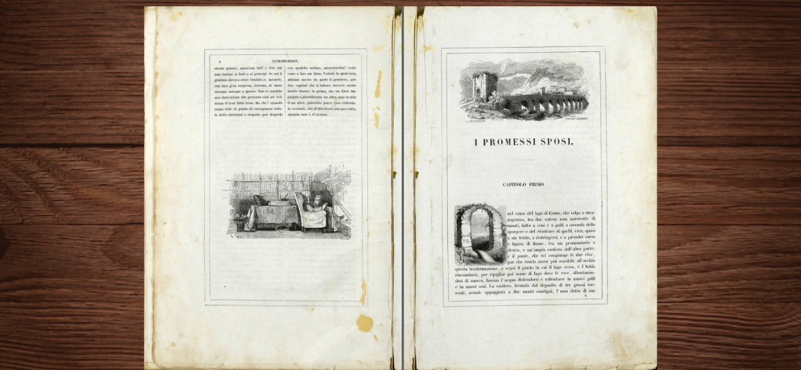

Romanzo
I Promessi Sposi è il celebre romanzo storico scritto da Alessandro Manzoni ed è considerato uno dei più grandi capolavori della letteratura italiana.
Prima di arrivare alla versione definitiva, il romanzo attraversò diverse fasi di scrittura e di riscrittura.
Fu preceduto da Fermo e Lucia, il titolo con cui si indica la prima versione (o “prima minuta”) de I Promessi Sposi, scritta tra il 1821 e il 1823 da Alessandro Manzoni, rimasta manoscritto.
Questo fu poi ufficialmente pubblicato per la prima volta tra il 1825 e il 1827 in un’edizione chiamata Ventisettana.
Successivamente, Manzoni lo revisionò profondamente, pubblicando l’edizione definitiva tra il 1840 e il 1842, nota come Quarantana.
I Promessi Sposi non è solo un’opera centrale del Romanticismo italiano, ma anche un testo fondamentale per la nascita della prosa italiana moderna.
Il romanzo unisce eventi storici reali e vicende di fantasia, mette al centro la vita delle persone comuni e contribuisce a definire una lingua italiana più chiara e condivisa.
Per questo motivo ha avuto un’influenza duratura non solo sulla letteratura, ma anche sulla cultura e sull’identità italiana.
Da Fermo e Lucia alla Ventisettana
Manzoni iniziò a scrivere Fermo e Lucia nell’aprile del 1821 e lo concluse nel 1823.
Nonostante ciò, rimase inedito fino al 1916. Questo non era un semplice abbozzo, ma un romanzo completo.
Tra il 1823 e il 1825 Manzoni riscrisse l’opera che prese prima il titolo Gli sposi promessi e poi venne conosciuta come l’edizione Ventisettana, ufficialmente pubblicata tra il 1825 e il 1827.
Fermo e Lucia presenta notevoli differenze nella struttura, nell’intreccio e nella caratterizzazione dei personaggi:
- la struttura risulta più equilibrata,
- la narrazione è organizzata in due blocchi separati; quasi come due storie autonome: prima viene raccontata l’intera vicenda di Lucia, poi quella di Fermo a Milano,
- include meno digressioni,
- i personaggi sono più realistici.
- i protagonisti: Fermo Spolino e Lucia Zarella diventarono Renzo Tramaglino e Lucia Mondella,
- la storia della Monaca di Monza occupa sei capitoli ed è raccontata con toni più cupi e macabri, ispirati al romanzo gotico,
- il Conte del Sagrato divenne l’Innominato,
- Valeriano fu trasformato in don Ferrante.
Revisioni linguistiche
Manzoni non era soddisfatto della lingua ibrida di Fermo e Lucia e si impegnò ad adottare il toscano come modello linguistico, ritenendolo l’idioma più efficace per ottenere il realismo.
Dopo la Ventisettana, compì il celebre gesto di “lavare i panni nell’Arno”,cioè trascorse del tempo a Firenze per affinare la lingua del romanzo, avvicinandola al fiorentino colto, più vicino all’italiano parlato.
La Quarantana
L’edizione definitiva, la Quarantana, fu pubblicata tra il 1840 e il 1842 a spese dello stesso Alessandro Manzoni. Questa versione comprende:
- una lingua ulteriormente migliorata,
- una stampa di alta qualità,
- le illustrazioni di Francesco Gonin, realizzate in stretta collaborazione con l’autore.
La Storia della colonna infame
La Storia della colonna infame racconta un episodio reale avvenuto durante la peste del 1630: il processo e la condanna di Giangiacomo Mora e Guglielmo Piazza, accusati ingiustamente di aver diffuso il contagio. Attraverso questo racconto, Manzoni condanna duramente la superstizione, la tortura e l’ingiustizia, mostrando come la paura e l’ignoranza possano portare a gravi errori.
Ambientazione storica e temi
Il romanzo I promessi sposi è ambientato in Lombardia tra il 1628 e il 1630, durante il dominio spagnolo. È considerato il primo vero romanzo storico della letteratura italiana.
Manzoni basò la sua narrazione su un’attenta ricerca storica, utilizzando documenti e cronache dell’epoca. Gli eventi storici reali, come la carestia, la guerra e la peste, si intrecciano con la storia inventata dei protagonisti.
Uno degli elementi più innovativi del romanzo è la scelta di raccontare la storia dal punto di vista di personaggi umili, e non di nobili o governanti. Tra i temi principali troviamo:
- la Provvidenza divina, che guida la storia degli uomini,
- la giustizia e l’ingiustizia,
- il rapporto tra potere e debolezza,
- la sofferenza degli innocenti e la speranza.